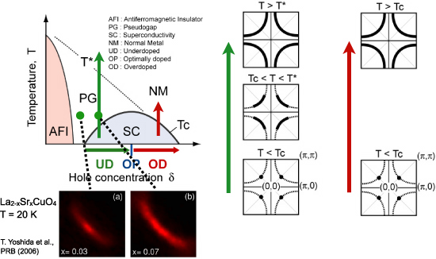

超伝導ギャップおよび擬ギャップ構造の解明
ホールドープ型の銅酸化物高温超伝導体の相図は、ホール濃度の低い領域に反強磁性絶縁体相があり反強磁性絶縁体相よりホール濃度が高い領域に超伝導相が位置している。さらにホール濃度を高くするとフェルミ液体論で記述できる金属状態となる。このように、銅酸化物高温超伝導体はホール濃度で物性が大きく変化する。超伝導相を三つの領域に分けて考えよう。超伝導転移温度が最大となる濃度を最適ドープ (OP) とし、それより濃度の高い領域を過剰ドープ領域 (OD)、最適ドープより濃度の低い領域を不足ドープ領域 (UD) として区別する。図中にはそれぞれの相について提唱されているフェルミ面の形状 (太い黒線) とその温度変化を表示している。過剰ドープ領域の超伝導相では、ノードを起点として d 波の超伝導ギャップが形成され、超伝導状態 T < Tc で (π/2, π/2) 付近にのみ点状のフェルミ面が形成される。超伝導転移温度を超えた温度 Tc < T になると、超伝導ギャップが閉じ大きなフェルミ面が形成される。一方、不足ドープ領域では、超伝導転移温度を超えたあとの Tc < T < T* の温度領域で、波数空間 (π, 0)、(0, π) 周辺にギャップが生き残り、フェルミ面の一部が消失し円弧 (arc) 状になることが報告されている[1,2,3]。円弧状のフェルミ面は「フェルミアーク」と呼ばれ、Tc 以上で形成されているギャップは「擬ギャップ」と呼ばれている。これら不足ドープ領域の異常な振る舞いは、角度分解光電子分光実験や走査型トンネル電子顕微鏡実験から多数報告されており、反強磁性絶縁体近傍の電子相関の強い領域で超伝導転移温度が減少する謎とともに議論されている。
このように、銅酸化物高温超伝導体はホール濃度に対して物性が大きく変化しており、高温超伝導メカニズムを解明するためにはホール濃度を系統的に変化させた研究が不可欠である。そこで我々は、二層系高温超伝導体 Bi2Sr2CaCu2O8+δ (Bi2212) や単層系高温超伝導体 Bi2Sr2-xLnxCuO6+δ (Ln-Bi2201)、La2-xSrxCuO4 (LSCO) などの試料を用い、超伝導ギャップおよび擬ギャップ構造のホール濃度依存性の研究に取り組んでいる。実験は広島大学放射光科学研究センター (HiSOR) BL-9A で角度分解光電子分光を用いて行っている。

銅酸化物系で一般的な相図とフェルミ面の模式図
銅酸化物系で一般的な相図とフェルミ面の模式図
参考文献
[1] T. Timusk and B. Statt, Rep. Prog. Phys. 62, 61 (1999).
[2] M. R. Norman et al., Nature 392, 157 (1998).
[3] W. S. Lee et al., Nature 450, 81 (2007).